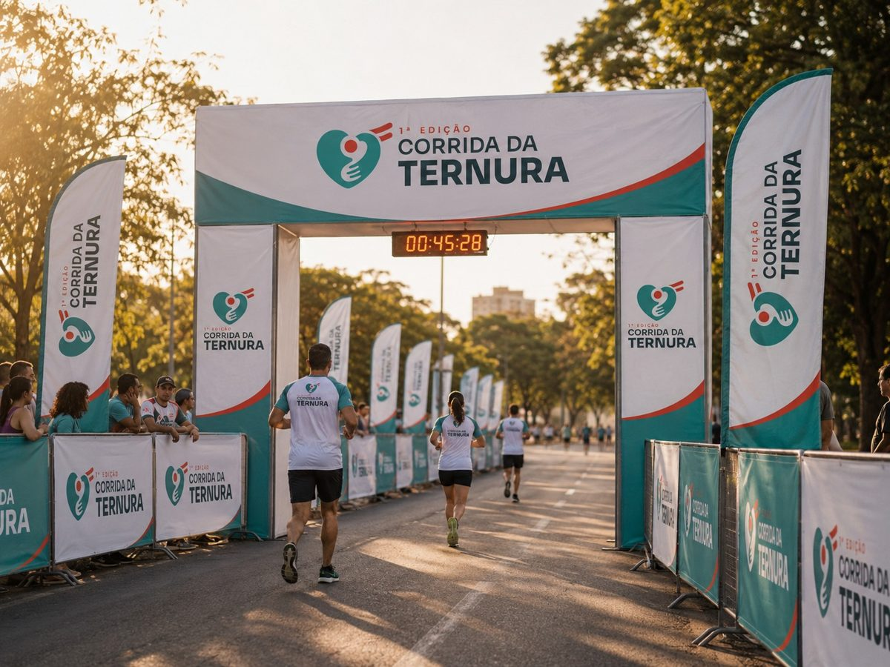
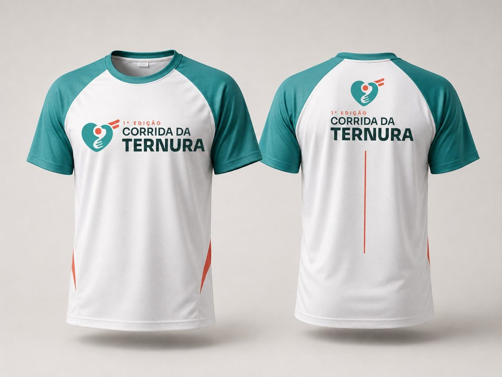
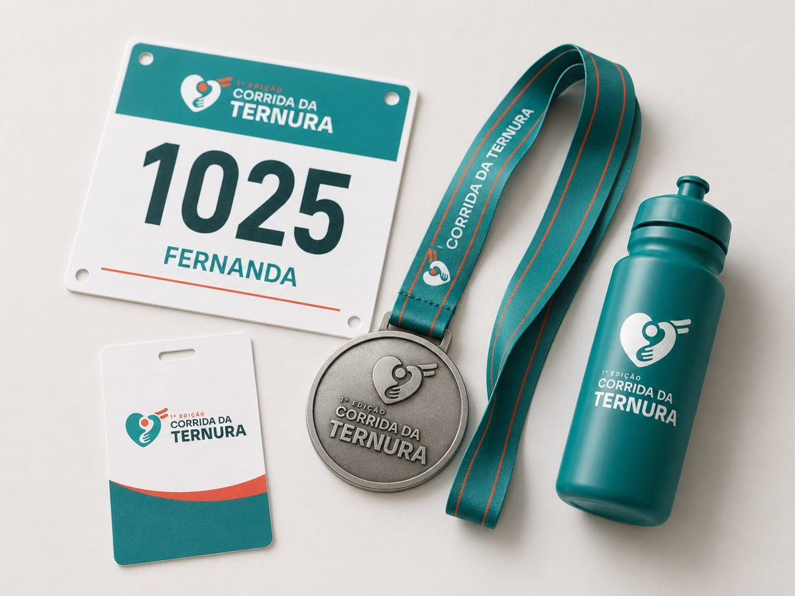

Data
15 NOV 2026
A 1ª Corrida da Ternura reúne esporte, família e comunidade em uma manhã inesquecível no Santuário da Divina e Trina Ternura, em Guarapuava.

Uma realização A 1ª Corrida da Ternura é uma realização do Santuário da Divina e Trina Ternura, em Guarapuava/PR, unindo esporte, acolhimento e comunidade em um mesmo movimento.
A Corrida da Ternura nasce para reunir quem corre por esporte, quem caminha por saúde e quem vem em família aproveitar a manhã.
O percurso parte do Santuário da Divina e Trina Ternura, às margens da BR-277, cercado pela paisagem de Guarapuava. É esporte bem organizado — com cronometragem, hidratação e medalha de finisher — no calor de um evento comunitário. Você define o ritmo; a gente cuida do resto.
Quero participar
5km e 10km cronometrados, com medalha de finisher.
Caminhada leve, para fazer no seu tempo e com quem você ama.
Corrida kids segura e divertida, por faixa etária.
Sua primeira corrida pode começar exatamente aqui.
Quatro formas de participar da mesma manhã. Todas terminam com medalha e aquele abraço na chegada.
Para quem está evoluindo ou quer um desafio acessível. Ideal para a primeira prova.
O desafio principal, para corredores intermediários. Premiação por categoria.
Percurso leve para fazer em família ou com amigos, no seu ritmo.
Provas curtas por faixa etária, em área segura. Medalha para toda criança.
As inscrições da estreia são por tempo limitado. Garanta a sua e faça parte da primeira Corrida da Ternura.
Quero me inscreverPercurso predominantemente plano, com pontos de hidratação e apoio ao longo do trajeto, cercado pela paisagem da BR-277. O mapa oficial, a altimetria e os pontos de hidratação serão divulgados aqui em breve.
Traçado oficial em breveTodo inscrito recebe o kit oficial da 1ª Corrida da Ternura. A composição prevista:



Imagens ilustrativas (mockups). A composição final do kit e a tabela de tamanhos serão confirmadas em breve.
Horários preliminares, sujeitos a confirmação no regulamento oficial.
Baixar regulamento (PDF)As inscrições são feitas online, pelo link oficial de inscrição — é só clicar em “Inscreva-se”. Você escolhe a modalidade e conclui o cadastro na plataforma de inscrições do evento.
Sim. A caminhada é ideal para ir em família e a corrida kids é dedicada às crianças, por faixa etária, em área segura.
Sim. As provas de 5km e 10km têm cronometragem por chip no número de peito. A caminhada não é cronometrada.
A retirada acontece em data e local a serem divulgados e, para quem não puder antes, na própria arena a partir das 06h30 no dia do evento.
Sim. O percurso terá pontos de hidratação e apoio, além de estrutura de largada/chegada, sanitários e equipe de atendimento na arena.
Para caminhar, o ideal é escolher a modalidade Caminhada, pensada para um ritmo tranquilo e sem cronometragem.
Realização, apoio e patrocínio que tornam a 1ª edição possível.
RealizaçãoSantuário da Divina e Trina Ternura
Guarapuava/PR
Apoio & patrocínio
As primeiras passadas da Corrida da Ternura podem ser suas. Garanta sua vaga na 1ª edição e venha correr com o coração.
Garantir minha inscrição Tirar dúvidas no WhatsApp